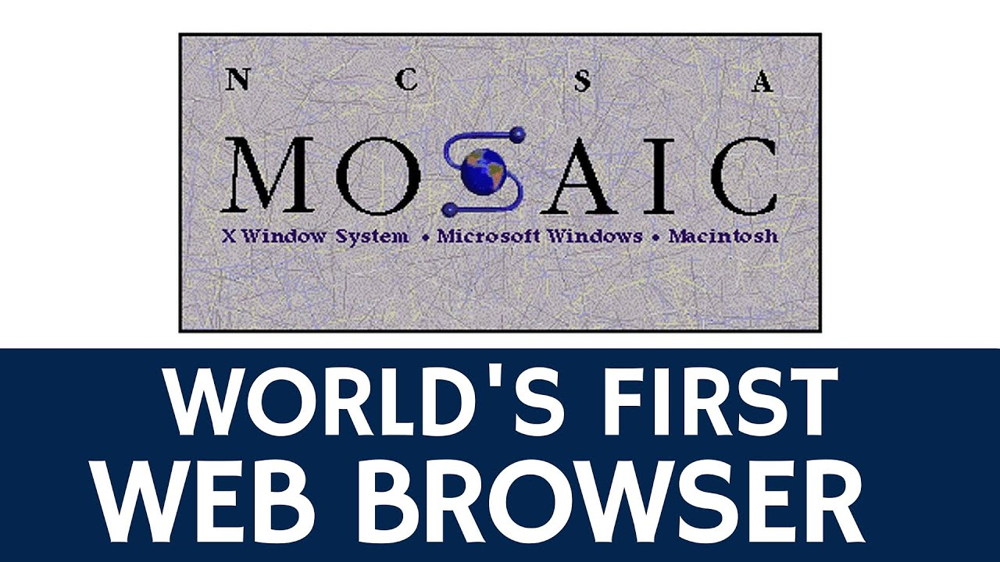

What is the Internet?
FORMAL DEFINITION: "The Internet, a loosely-organized international collaboration of autonomous, interconnected networks, supports host-to-host communication through voluntary adherence to open protocols and procedures defined by Internet Standards."
SIMPLE DEFINITION: "A collection of multiple different pieces of computer and non-computer equipment talking to one another by means of a communications network either wired or wireless."
Sputnik 1 was the first artificial Earth satellite. The Soviet Union launched it into an elliptical low Earth orbit on 4 October 1957. The satellite's unanticipated success precipitated the American Sputnik crisis and triggered the Space Race, part of the Cold War. The launch was the beginning of a new era of political, military, technological and scientific developments. The word "sputnik" is Russian for satellite when interpreted in an astronomical context; its other meanings are spouse or traveling companion.
Tracking and studying Sputnik 1 from Earth provided scientists with valuable information. The density of the upper atmosphere could be deduced from its drag on the orbit, and the propagation of its radio signals gave data about the ionosphere.
NASA was established in 1958, succeeding the National Advisory Committee for Aeronautics (NACA). The new agency was to have a distinctly civilian orientation, encouraging peaceful applications in space science. Since its establishment, most US space exploration efforts have been led by NASA, including the Apollo Moon landing missions, the Skylab space station, and later the Space Shuttle. NASA is supporting the International Space Station and is overseeing the development of the Orion spacecraft, the Space Launch System, and Commercial Crew vehicles. The agency is also responsible for the Launch Services Program, which provides oversight of launch operations and countdown management for uncrewed NASA launches.
The Advanced Research Projects Agency (ARPA) of the U.S. Department of Defense awarded contracts in 1969 for the development of the ARPANET project, directed by Robert Taylor and managed by Lawrence Roberts. ARPANET adopted the packet switching technology proposed by Davies and Baran, underpinned by mathematical work in the early 1970s by Leonard Kleinrock at UCLA. The network was built by Bolt, Beranek, and Newman.
The first recorded description of the social interactions that could be enabled through networking was a series of memos written by J.C.R. Licklider of MIT in August 1962 discussing his “Galactic Network” concept. He envisioned a globally interconnected set of computers through which everyone could quickly access data and programs from any site. In spirit, the concept was very much like the Internet of today.
In 1969, The first computers talk over the ARPANET happens. (And early hypertext – though not WWW)!: Due to Kleinrock’s early development of packet switching theory and his focus on analysis, design and measurement, his Network Measurement Center at UCLA was selected to be the first node on the ARPANET. All this came together in September 1969 when BBN installed the first IMP at UCLA and the first host computer was connected. Doug Engelbart’s project on “Augmentation of Human Intellect” (which included NLS, an early hypertext system) at Stanford Research Institute (SRI) provided a second system) at Stanford Research Institute (SRI) provided a second node.
The first public demonstration of the ARPANET, and the introduction of email. In October 1972, Bob Kahn organized a large, very successful demonstration of the ARPANET at the International Computer Communication Conference (ICCC). This was the first public demonstration of this new network technology to the public. It was also in 1972 that the initial “hot” application, electronic mail, was introduced.
1973: Vint Cerf joins up with Kahn to spell out the details of what became TCP/IP, and Bob Metcalfe develops Ethernet technology at Xerox PARC.
The give and take was highly productive and the first written version of the resulting approach was distributed at a special meeting of the International Network Working Group (INWG) which had been set up at a conference at Sussex University in September 1973.
Nov 1983 – Jon Postel, Paul Mockapedis, and Craig Partridge design the Domain Name System (DNS). In the beginning… “there were a fairly limited number of hosts, so it was feasible to maintain a single table of all the hosts and their associated names and addresses”. The shift to having a large number of independently managed networks (e.g. LANs) meant that having a single table of hosts was no longer feasible, and the Domain Name System (DNS) was invented by Paul Mockapetris of USC/ISI.
This is also the period in which the single distributed routing algorithm implemented by all routers on the internet was replaced by a hierarchical model of routing with gateway protocols.
By Christmas 1990, Berners-Lee had built all the tools necessary for a working Web: the HyperText Transfer Protocol (HTTP), the HyperText Markup Language (HTML), the first Web browser (named WorldWideWeb, which was also a Web editor), the first HTTP server software (later known as CERN httpd), the first web server (http://info.cern.ch), and the first Web pages that described the project itself. The browser could access Usenet newsgroups and FTP files as well. However, it could run only on the NeXT; Nicola Pellow therefore created a simple text browser, called the Line Mode Browser, that could run on almost any computer. To encourage use within CERN, Bernd Pollermann put the CERN telephone directory on the web—previously users had to log onto the mainframe in order to look up phone numbers.
1993 – Marc Andreesen – Develops Mosaic web browser: NCSA Mosaic was one of the first web browsers. It was instrumental in popularizing the World Wide Web and the general Internet by integrating multimedia such as text and graphics. It is a client for earlier internet protocols such as File Transfer Protocol, Network News Transfer Protocol, and Gopher. It was named for its support of multiple Internet protocols. Its intuitive interface, reliability, personal computer support, and simple installation all contributed to its popularity within the web. Mosaic is the first browser to display images inline with text instead of in a separate window. It is often described as the first graphical web browser, though it was preceded by WorldWideWeb.

By mid-1995, the World Wide Web had received a great deal of attention in popular culture and the mass media. Netscape Navigator was the most widely used web browser and Microsoft had licensed Mosaic to create Internet Explorer 1.0, which it had released as part of the Microsoft Windows 95 Plus! pack in August.
Internet Explorer 2.0 was released as a free download three months later. Unlike Netscape Navigator, it was available to all Windows users free of charge, this also applying to commercial companies. Other companies later followed suit and released their browsers free of charge. Both Netscape Navigator and competitor products like InternetWorks, Quarterdeck Browser, InterAp, and WinTapestry were bundled with other applications to full Internet suites. New versions of Internet Explorer and Netscape (branded as Netscape Communicator) were released at a rapid pace over the following few years.
Development was rapid and new features were routinely added, including Netscape's JavaScript (subsequently replicated by Microsoft as JScript) and proprietary HTML tags such as (Navigator) and (Internet Explorer). Internet Explorer began to approach feature parity with Netscape with version 3.0 (1996), which offered scripting support and the market's first commercial Cascading Style Sheets (CSS) implementation.